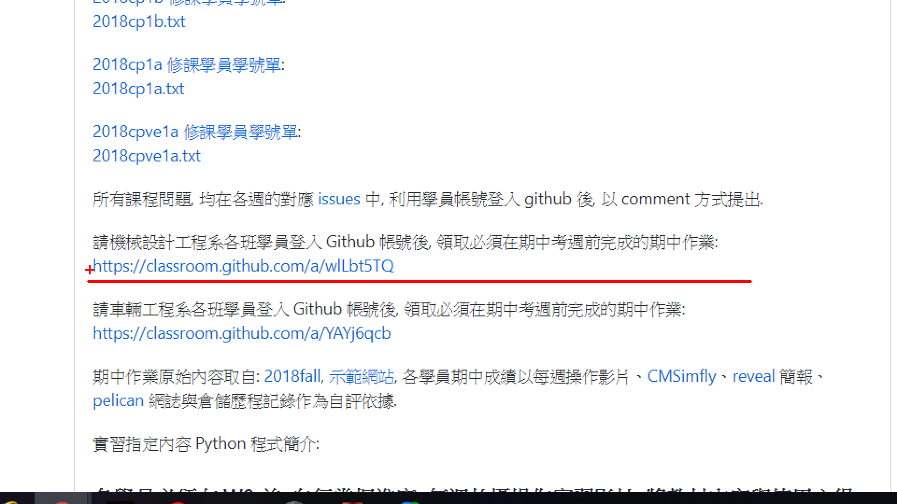
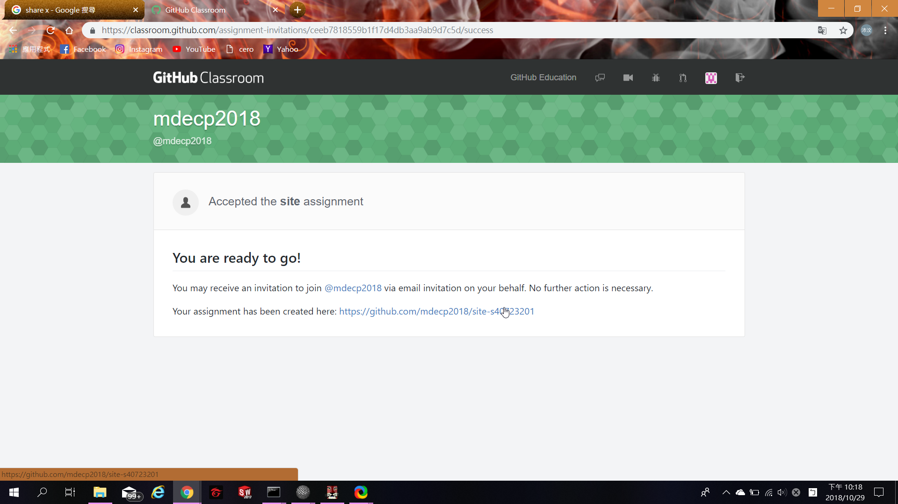
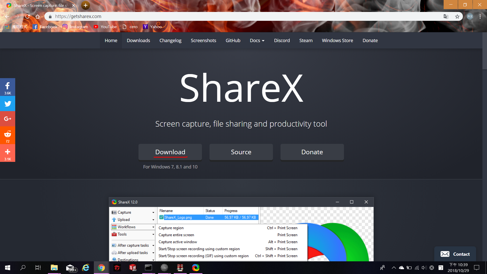
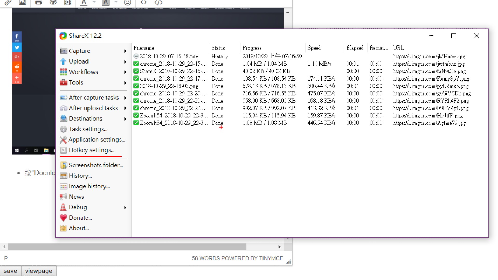
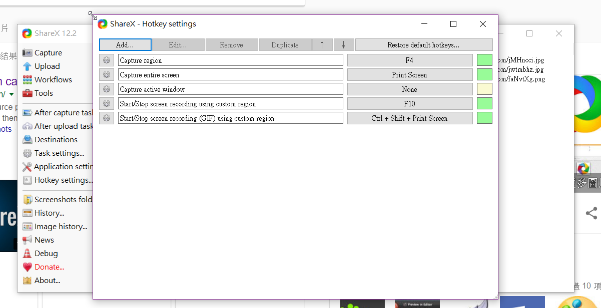
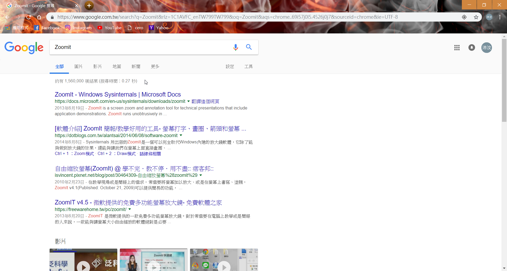
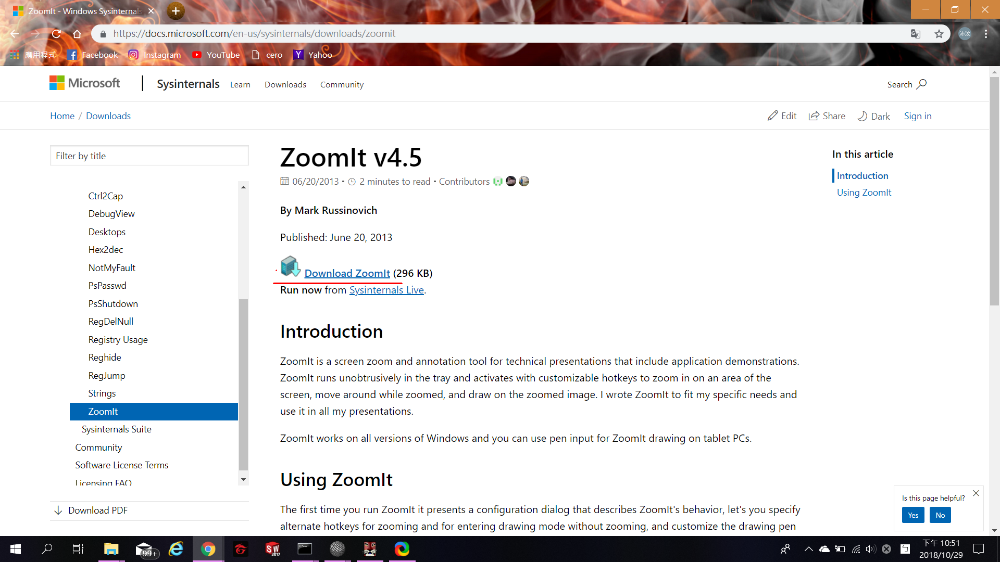

Week2
本周在領取個人作業及下載"Share X"、"Zoomit"

- 至2018fall>week1 領取個人作業

- 此為領取完畢的畫面
接下來跟WEEK1一樣的步驟，將期中作業倉儲 git clone至tmp裡進行管理

- 至瀏覽器搜尋 "Share X"

- 按"Doenload"下載"Share X"

- 打開"Share X"，此為"Share X"的介面，按"Hotkey settings"

- 可以更改快捷鍵。
Capture region ( 截圖 ) 、Start/Stop screen recording ( 開始 / 結束 錄影 )

- 至瀏覽器搜尋"Zoomit"

- 按"Download Zoomit"下載程式
@app.route('/delete_file'.methods=['POST'])
def delete_file():
"""Dekete user uploaded files."""
if not isAdmin():
return redirect("/login")
head,level,page =parse_content()
directory =render_menu(head,level,page)
Week1 << Previous Next >> Week3